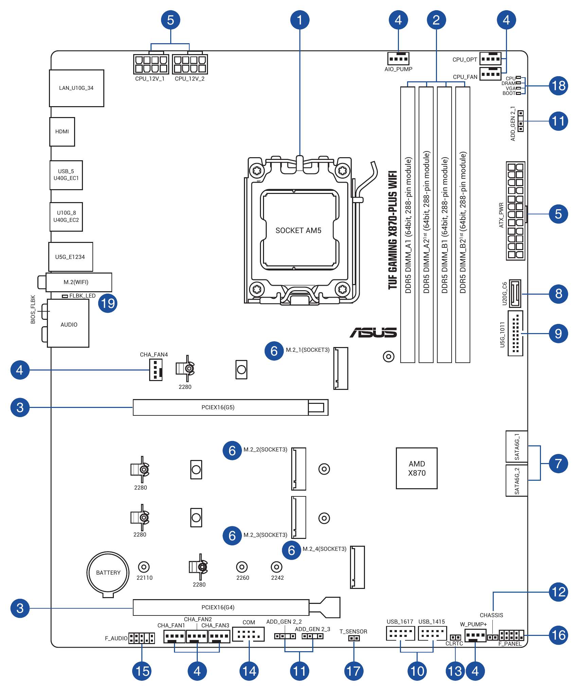

0221 · Montaje y mantenimiento de equipo · Tema 3 (UT3) · Ejercicios
Boletín 5 · Placas base reales
Boletín 5 · Placas base reales
Cada ejercicio de este boletín es una placa base de verdad, con la documentación que trae su manual. Es lo que harás en el taller cada vez que te llegue una placa que no conoces, y lo que te pedirá el examen. Cada placa tiene dos partes:
- Parte A · El esquema (Motherboard layout): localizar cada componente con los números y la serigrafía, y saber para qué sirve. Repasa el mapa de la placa base (3.2) y practica con la placa interactiva.
- Parte B · La ficha técnica (Specifications summary): buscar en la tabla de especificaciones el dato que te piden y sacar conclusiones con él. Repasa los apartados 3.3 (procesador) a 3.7.
Iremos añadiendo placas a lo largo del tema.
5.1 ASUS TUF GAMING X870-PLUS WIFI CE c CE e CE f CE k
Parte A · El esquema
Este es el esquema de la placa que aparece en su manual (apartado 1.2, Motherboard layout). Los números azules señalan cada grupo de componentes; un mismo número puede aparecer en varios sitios cuando son componentes del mismo tipo.


A1) Identifica los componentes. Copia esta tabla en LibreOffice Writer y complétala para los 19 números. En «Rótulos» escribe la serigrafía que aparece en el esquema; en «Qué es» y «Para qué sirve», con tus palabras.
| N.º | Rótulos en el esquema | Qué es | Para qué sirve / qué se conecta |
|---|---|---|---|
| 1 | |||
| 2 | |||
| … | |||
| 19 |
A2) Localiza sin número. Algunos componentes no tienen número. Haz una captura del esquema y rodea en ella, con un programa de dibujo, el chipset (escribe su modelo al lado) y la pila. ¿Junto a qué números está cada uno?
A3) El componente 1 a fondo. Explica todo lo que sepas del componente 1: su nombre y modelo, de qué tipo es (dónde están los contactos), qué otros tipos existen (con un ejemplo de cada uno), qué se conecta en él y qué familias de procesadores admite.
A4) Alimentación. ¿Qué conectores del número 5 salen de la fuente? ¿Cuántos pines tiene cada uno? ¿Por qué el procesador tiene su propia alimentación?
A5) Memoria. ¿Cuántas ranuras hay? ¿Podrías poner un módulo DDR4? Si el cliente trae dos módulos, ¿en qué ranuras los pones? Fíjate en lo que indica el esquema junto al nombre de dos de ellas.
A6) Ventiladores y bombas. Clasifica los conectores del número 4: ¿dónde conectas el ventilador del disipador del procesador? ¿Y la bomba de una refrigeración líquida AIO? ¿Cuántos ventiladores de caja puedes conectar sin usar un divisor? ¿Para qué crees que es W_PUMP+?
A7) Panel frontal de la caja. La caja tiene botones de encendido y reinicio, LED, audio, dos USB-A de 5 Gbit/s, un USB-C de 20 Gbit/s y un lector de tarjetas con conector USB 2.0. Indica en qué conector de la placa (rótulo y número del esquema) va cada cable.
A8) Diagnóstico. Montas el equipo, lo enciendes y no se ve imagen. Se queda encendido el LED DRAM del número 18. ¿Qué revisarías, y en qué orden?
A9) Panel trasero. El panel trasero de E/S está a la izquierda del esquema. Explica qué es cada rótulo (por ejemplo, U40G_EC1 o U5G_E1234). Comprueba tu respuesta con la ficha técnica de la parte B.
Parte B · La ficha técnica
Esta es la ficha técnica de la placa, traducida y resumida del manual (Specifications summary) y de la web de ASUS. Los asteriscos remiten a las notas de cada fila: en las notas suele estar el dato que cambia la respuesta.
| Procesador | Zócalo AMD AM5 para procesadores de sobremesa AMD Ryzen serie 9000, 8000 y 7000* * Consulta la lista de procesadores compatibles en el centro de descargas de ASUS. |
|---|---|
| Chipset | AMD X870 |
| Memoria | 4 ranuras DIMM, máx. 256 GB, DDR5 hasta 8000+ MT/s (OC) con Ryzen 9000, 8000 y 7000. Módulos ECC y no ECC, sin búfer (unbuffered)* Arquitectura de memoria de doble canal (dual channel) Admite perfiles AMD EXPO y ASUS AEMP * Los tipos, velocidades y número de módulos admitidos dependen del procesador y de la configuración: consulta la lista de memorias compatibles (QVL) en la web de ASUS. |
| Gráficos | 1 puerto HDMI** 2 puertos USB4 (40 Gbit/s) con salida de vídeo USB-C*** * Las características gráficas dependen del procesador. ** HDMI 2.1: 4K a 60 Hz. *** Hasta 4K a 60 Hz (DisplayPort 1.4a). |
| Ranuras de expansión | Con Ryzen 9000 y 7000: 1 × PCIe 5.0 x16 (modo x16)* Con Ryzen 8000: 1 × PCIe 4.0 x16 (modo x8/x4) Chipset AMD X870: 1 × PCIe 4.0 x16 (modo x4)** * PCIEX16(G5) comparte ancho de banda con M.2_2: si se usa M.2_2, funciona en x8. ** PCIEX16(G4) se desactiva si se usa M.2_4. |
| Almacenamiento | 4 ranuras M.2 (llave M) y 2 puertos SATA 6 Gb/s Con Ryzen 9000 y 7000: M.2_1, tipo 2280, PCIe 5.0 x4 · M.2_2, tipo 2280, PCIe 5.0 x4* Con Ryzen 8000: M.2_1, tipo 2280, PCIe 4.0 x4** Chipset AMD X870: M.2_3, tipo 2280, PCIe 4.0 x4 · M.2_4, tipos 2242/2260/2280/22110, PCIe 4.0 x4*** · 2 puertos SATA 6 Gb/s RAID: PCIe RAID 0/1/5/10 y SATA RAID 0/1 (RAID 5 solo con Ryzen 9000) * Ver la nota de PCIEX16(G5). ** M.2_2 no funciona con un Ryzen 8000. *** Ver la nota de PCIEX16(G4). |
| Red | 1 × Realtek 2.5Gb Ethernet Wi-Fi 7 (802.11be) 2x2, bandas de 2,4, 5 y 6 GHz · Bluetooth 5.4 |
| USB | Traseros (10 en total): 2 × USB4 40 Gbit/s (tipo C) · 3 × USB 10 Gbit/s (tipo A) · 4 × USB 5 Gbit/s (tipo A) · 1 × USB 2.0 (tipo A) Frontales (7 en total): 1 conector USB 20 Gbit/s (USB-C con carga rápida de hasta 30 W) · 1 conector USB 5 Gbit/s para 2 puertos más · 2 conectores USB 2.0 para 4 puertos más |
| Audio | Códec Realtek ALC1220P, sonido envolvente 7.1 |
| Panel trasero | 2 USB4 tipo C · 3 USB 10 Gbit/s · 4 USB 5 Gbit/s · 1 USB 2.0 · 1 HDMI · 1 módulo Wi-Fi · 1 Ethernet 2.5 Gb · 5 conectores de audio · 1 botón BIOS FlashBack |
| Conectores internos | Ventilación: CPU_FAN, CPU_OPT y AIO_PUMP (4 pines) · 4 de caja (4 pines) · W_PUMP+ Alimentación: 1 × 24 pines · 2 × 8 pines +12 V para el procesador Varios: 3 ARGB Gen 2 · intrusión del chasis · Clear CMOS · puerto COM · audio frontal · panel del sistema (10-1 pines) · sensor de temperatura |
| BIOS | Flash ROM de 256 Mb, UEFI AMI · Nombre del archivo para BIOS FlashBack: A5569.CAP |
| Gestión | WOL by PME, PXE |
| Sistema operativo | Windows 11 |
| Formato | ATX, 12 × 9,6 pulgadas (30,5 × 24,4 cm) |
Responde con la ficha. En cada respuesta, di de qué fila has sacado el dato.
- ¿Cuál es el formato de la placa y cuánto mide?
- ¿Qué procesadores admite? ¿Por qué esos y no un Ryzen 5000 o un Intel?
- ¿Dónde puedes consultar la lista exacta de procesadores compatibles? ¿Por qué hace falta, si ya sabes el zócalo?
- ¿Qué tipo de memoria admite? ¿Cuántas ranuras tiene?
- ¿Cuál es la capacidad máxima de memoria? Para llegar a ella, ¿de qué tamaño tiene que ser cada módulo?
- ¿Qué velocidad máxima de memoria indica? ¿Qué significa «(OC)»? ¿Qué es EXPO y cuándo lo activarías?
- ¿Admite dual channel o quad channel? ¿Cuántos módulos necesitas, como mínimo, para aprovecharlo?
- ¿Qué chipset tiene? ¿Tiene esta placa puente norte y puente sur? ¿Dónde está el controlador de memoria? Pista: fíjate en que la ficha separa lo que va «con Ryzen» de lo que va «con el chipset AMD X870».
- ¿Dónde está la gráfica integrada: en la placa o en el procesador? ¿Qué salidas de vídeo tiene la placa? Con un Ryzen 7 9700X y sin tarjeta gráfica, ¿puedes conectar el monitor? ¿Y con un Ryzen 5 7500F?
- ¿Cuántos puertos SATA tiene y a qué velocidad? ¿Cuántos discos duros SATA puedes conectar?
- ¿Cuántas ranuras M.2 tiene? ¿Qué longitudes admite cada una? ¿Cuáles van conectadas al procesador y cuáles al chipset?
- ¿Cuántas ranuras PCIe x16 tiene, de qué versión y en qué modo funciona cada una? ¿Qué significan «G5» y «G4» en sus nombres del esquema?
- El cliente tiene una tarjeta gráfica PCIe 5.0 x16, un SSD NVMe PCIe 5.0 de tipo 2280, un SSD NVMe de tipo 22110 y dos discos duros SATA. ¿Dónde conectas cada cosa para que todo vaya a su máxima velocidad? Después quiere añadir una tarjeta capturadora PCIe x4: ¿dónde la pondrías y qué tendría que cambiar?
- Otro cliente monta un Ryzen 5 8600G. Según la ficha, ¿qué cambia en las ranuras PCIe y M.2 respecto a un Ryzen 9000?
- ¿Cuántos USB traseros tiene en total? Clasifícalos por velocidad. ¿Cuál es el único USB 2.0 del panel trasero en el esquema?
- ¿Cuántos puertos USB frontales puede tener la caja como máximo? ¿Qué conectores internos se usan para ellos?
- ¿Qué red cableada e inalámbrica tiene? ¿Qué códec de audio?
- ¿Qué capacidad tiene el chip de la BIOS? ¿Para qué necesitas saber el nombre de archivo «A5569.CAP»?
- Estás montando un ordenador con esta placa. De estas opciones de memoria,
¿cuál elegirías y por qué? ¿Qué le pasa a cada una de las otras?
- Opción 1: DDR4, 2 × 16 GB, 3600 MT/s
- Opción 2: DDR5, 1 × 32 GB, 6000 MT/s
- Opción 3: DDR5, 2 × 16 GB, 6000 MT/s, perfil EXPO
- Opción 4: DDR5, 2 × 16 GB, 8800 MT/s
5.2 Busca tú la documentación: gymkana de placas CE c CE e CE k
Ahora nadie te da el esquema ni la ficha: los tienes que encontrar tú, como en el taller. Trabajarás con estas dos placas:
| Placa | Fabricante |
|---|---|
| MAG B850 TOMAHAWK MAX WIFI | MSI |
| PRO B760M-A DDR4 | MSI |
Paso 1 · Encuentra el manual
- Entra en msi.com, busca la placa y abre su página de Soporte (Support) → Manual. Descarga el manual de usuario en PDF (en inglés o multilingüe).
- Comprueba que es exactamente tu placa. Hay modelos con nombres casi iguales (MAG B850 TOMAHAWK WIFI, MAG B850 TOMAHAWK MAX WIFI II, PRO B760M-A WIFI DDR4…) y sus fichas cambian.
- Dentro del manual, localiza la hoja de características (Specifications) y el esquema de la placa (Overview of Components). Anota en qué páginas están.
Paso 2 · La gymkana (en clase)
En clase lo haremos en modo competición con la gymkana de placas: el profesor te dará la clave de salida. Cada placa se desbloquea cuando demuestras que tienes su manual, y después respondes preguntas al azar sobre su ficha y su esquema, y unos retos finales que comparan las dos. Al terminar, guarda el informe en PDF y entrégalo. Quien gane se lleva 0,5 puntos más en el examen del tema.
Paso 3 · Si lo haces en casa: las partes A y B
Para practicar por tu cuenta, repite con cada placa las partes A y B del ejercicio 5.1:
- Parte A: haz una captura del esquema del manual y rodea y nombra el zócalo, las ranuras de memoria, PCIe y M.2, los puertos SATA, los conectores de alimentación, el del ventilador del procesador, el panel frontal, el audio frontal, los USB internos (de cada tipo), el chipset, la pila y el puente de Clear CMOS. Debajo, una tabla con el rótulo de cada uno (MSI usa sus propios rótulos: JFP1, JAUD1, JUSB…).
- Parte B: completa esta tabla comparativa con la hoja de características.
| Dato | B850 TOMAHAWK MAX WIFI | B760M-A DDR4 |
|---|---|---|
| Páginas del manual (ficha y esquema) | ||
| Formato y medidas | ||
| Zócalo y procesadores compatibles | ||
| Chipset | ||
| Memoria: tipo, ranuras, capacidad máxima, velocidad máxima, canales | ||
| Salidas de vídeo | ||
| Ranuras PCIe: cuántas, versión, modo y de dónde salen | ||
| M.2: cuántas, longitudes, versión PCIe, de dónde salen | ||
| Puertos SATA, velocidad y de dónde salen | ||
| Conectores de ventilador | ||
| Red cableada e inalámbrica | ||
| Códec de audio | ||
| Tamaño del chip de la BIOS |
Qué entregas del boletín 5
Un ZIP con la memoria en PDF del 5.1 (partes A y B). El 5.2 se entrega aparte: el informe en PDF de la gymkana (<usuario>_gymkana.pdf).
- <usuario>_E35.zip
- <usuario>_E35.pdf (dentro del ZIP)
Comprueba antes de entregar
- La tabla de A1 tiene las 19 filas, y cada fila sus tres columnas rellenas.
- Cuando un número señala varios componentes (el 3, el 4, el 5, el 6, el 10 o el 11), están todos sus rótulos y se explica la diferencia entre ellos.
- En «Para qué sirve» dices qué se conecta (cable, tarjeta, dispositivo), no solo el nombre.
- La captura de A2 tiene rodeados el chipset (con su modelo) y la pila.
- En la parte B, cada respuesta dice de qué fila de la ficha sale el dato, y las preguntas 13, 14 y 19 explican el porqué.
- El informe de la gymkana tiene tu nombre, tus respuestas y el código de ranking, y lo has guardado en PDF desde el botón del final.
Cómo debe quedar
Fallo más común: quedarse con la primera línea de la ficha y no leer las notas con asterisco. En esta placa, las notas dicen qué ranuras se desactivan o se ralentizan al usar otras, y qué cambia con un Ryzen 8000.